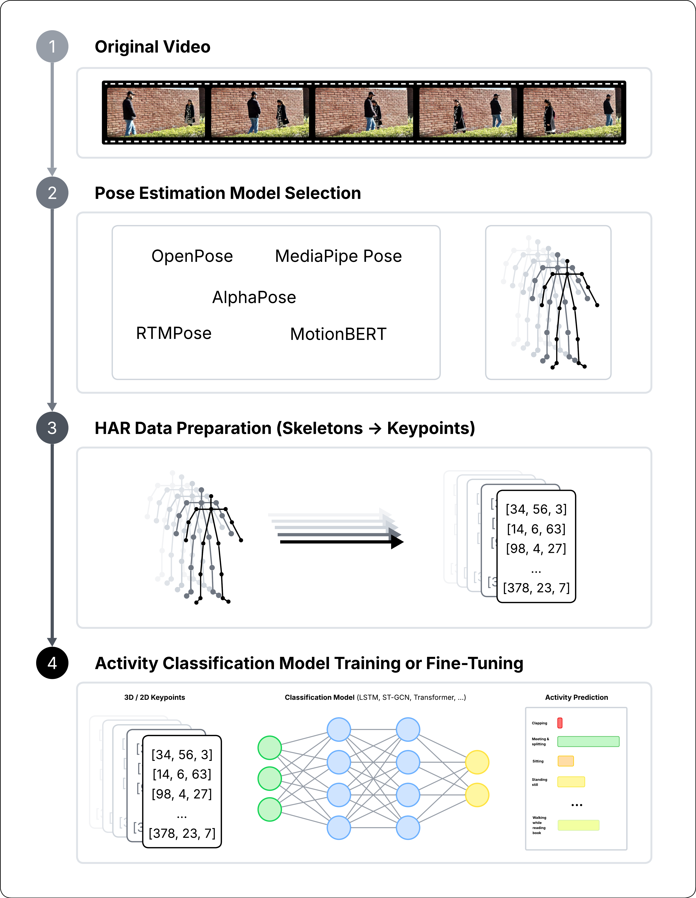

Lab Assignment: Human Activity Recognition from Pose Estimated in Video¶

Introduction¶
In this lab assignment, you will develop a Human Activity Recognition (HAR) system from videos, using a human pose estimation model as a preprocessing step before the action classifier.
The main objective is for you to learn how to build, implement, and explain a complete pipeline that transforms a video into a body representation that is useful for classifying the performed activity.
Unlike other assignments, you will not need to submit a separate report. The entire assignment must be documented, explained, and justified within the Google Colab notebook itself, combining code cells and Markdown cells.
Objectives¶
By the end of this lab assignment, you should be able to:
- Design a pose-based HAR pipeline, from the original video to the final activity prediction.
- Select a pose estimation model, preferably a pretrained one, and justify your choice.
- Prepare a HAR video dataset and convert it into sequences of keypoints or skeletons.
- Train or fine-tune an activity classification model based on those sequences.
- Critically analyze how pose quality, noise, occlusions, and the chosen representation affect the final performance.
- Present the entire work clearly and reproducibly within a notebook.
Task Description¶
You will be provided with a video dataset for human activity recognition, here.
Using this dataset, you must build a system capable of classifying the activity performed in each video by using estimated human pose as an intermediate representation.
To do so, each group must:
- Choose a pose estimation model, preferably pretrained.
- Apply it to the dataset to extract body keypoints frame by frame.
- Transform those keypoint sequences into the input of an action classification model.
- Train or fine-tune the classifier on the new dataset.
- Evaluate the final system.
- Explain the developed pipeline in detail within the notebook itself.
Recommended Models¶
You may freely choose the pose model, but it is recommended to use pretrained models so that the main effort of the assignment is focused on the pipeline and on adapting it to the HAR problem, rather than on training a pose estimation model from scratch.
Valid examples include:
- RTMPose.
- MediaPipe Pose / BlazePose.
- Other equivalent pretrained models, as long as you clearly explain their output, their limitations, and their integration into the pipeline.
Minimum Expected Pipeline¶
The pipeline you develop must include, at a minimum, the following stages:
1. Dataset Loading and Preparation¶
You must load the videos, organize the activity labels, and define a strategy for splitting the data into training, validation, and test sets.
2. Pose Extraction¶
You must apply the chosen pose model to each video in order to obtain a temporal sequence of keypoints or landmarks.
3. Sequence Representation¶
You must convert the pose sequence into a representation that can be used by the classifier, for example:
- Frame-wise normalized 2D or 3D coordinates.
- Joint distances and angles.
- Full skeletal sequences for GCN-based or temporal convolution models.
4. Activity Classification¶
You must train a classifier on the extracted sequences.
You may use a classical baseline or a model specifically designed for skeleton-based action recognition, such as ST-GCN or similar variants.
5. Evaluation¶
At a minimum, you must report:
- Accuracy
- Precision
- Recall
- Macro F1-score
- Confusion matrix or equivalent analysis
You must also analyze which errors come from the classifier and which seem to originate from the pose estimation itself.
The Notebook Replaces the Report¶
In this assignment, the Google Colab notebook is the report, here.
This means it is not enough for the code to work: the notebook must be well structured, clearly explained and allow the reader to understand what you did, why you did it that way and what results you obtained.
Therefore, your Colab notebook must include Markdown cells with the following sections:
Section 1. Introduction and Problem Statement¶
You must briefly explain:
- What problem you want to solve.
- What dataset you are using.
- Which activity classes it contains.
- Why a pose-based approach may be suitable for this problem.
Section 2. Chosen Pose Model¶
You must explain:
- Which pose model you selected.
- Why you chose it.
- Whether it is 2D or 3D.
- What output it produces exactly.
- What advantages and limitations it has for HAR.
Section 3. Developed Pipeline¶
You must clearly describe your complete pipeline:
- Video input.
- Pose extraction.
- Keypoint preprocessing.
- Sequence or feature construction.
- Final classifier.
- Activity prediction.
Section 4. Preprocessing and Design Decisions¶
You must justify decisions such as:
- Temporal frame sampling.
- Coordinate normalization.
- Sequence padding or truncation.
- Removal of problematic videos.
- Handling of frames without detections.
- Choice of sequence length.
- Choice of classifier.
Section 5. Training¶
You must indicate:
- How you split the data.
- Which architecture you used.
- Which main hyperparameters you selected.
- Which loss function and optimizer you used.
Section 6. Results¶
You must show:
- Accuracy.
- Precision.
- Recall.
- Macro F1-score.
- Confusion matrix.
- Summary table of results.
Section 7. Critical Analysis¶
You must analyze:
- Which classes are most often confused.
- Which errors seem to be caused by pose quality.
- Which errors seem to be caused by the classifier.
- Which limitations you found.
- What you would improve if you had more time.
Section 8. Conclusions¶
You must finish the notebook with a brief final conclusion summarizing:
- What you built.
- What you learned.
- What performance you obtained.
- What future improvements you would propose.
Deliverables¶
You must submit only:
- A well-structured and fully reproducible Google Colab notebook.
- The notebook link, or the notebook exported as an
.ipynbfile, depending on the instructor’s instructions.
No PDF or additional written report will be submitted.
Minimum Notebook Requirements¶
The notebook must:
- Run from start to finish.
- Have clear titles and subtitles.
- Combine code and explanation.
- Include visualizations or result tables.
- Show at least one example of a video or frame with extracted pose.
- Clearly present the final metrics.
- Include a final critical discussion.
A notebook that contains only code, without sufficient explanation, will be considered incomplete.
Results Ranking¶
Part of the evaluation of the assignment will be based on a ranking of results across all groups, and this component will account for 10% of the final grade.
To ensure fairness, the ranking will be computed using the same test split and the same main metric for all groups.
The main ranking metric will be Macro F1-score:
Ranking rules:
- Everyone must use the same final test split.
- The submitted system must be reproducible.
- Only the best configuration documented within the notebook will be considered.
- In the event of a tie, a secondary metric (accuracy) or the clarity of reproducibility may be used as an additional criterion.
Grading Rubric¶
| Criterion | Weight |
|---|---|
| Design and implementation of the complete pipeline | 30% |
| Justification of the pose model and classifier | 20% |
| Experimental quality and evaluation | 20% |
| Critical analysis of errors and limitations | 20% |
| Results ranking | 10% |
Recommendations¶
It is recommended to start with a simple and functional system before trying more complex improvements.
For example, a reasonable strategy is:
- Choose a pretrained pose extractor.
- Generate normalized keypoint sequences.
- Train a baseline classifier.
- Evaluate it properly.
- Only then, try additional improvements.
In this type of assignment, it is usually more valuable to present a clear, well-explained, and reproducible pipeline than a very complex but unstable solution.
What Will Be Especially Valued¶
Special consideration will be given to notebooks that:
- Are clear and easy to follow.
- Show that you understand the full pipeline.
- Properly justify technical decisions.
- Analyze errors critically.
- Are reproducible.
- Do not depend on ambiguous or undocumented manual steps.